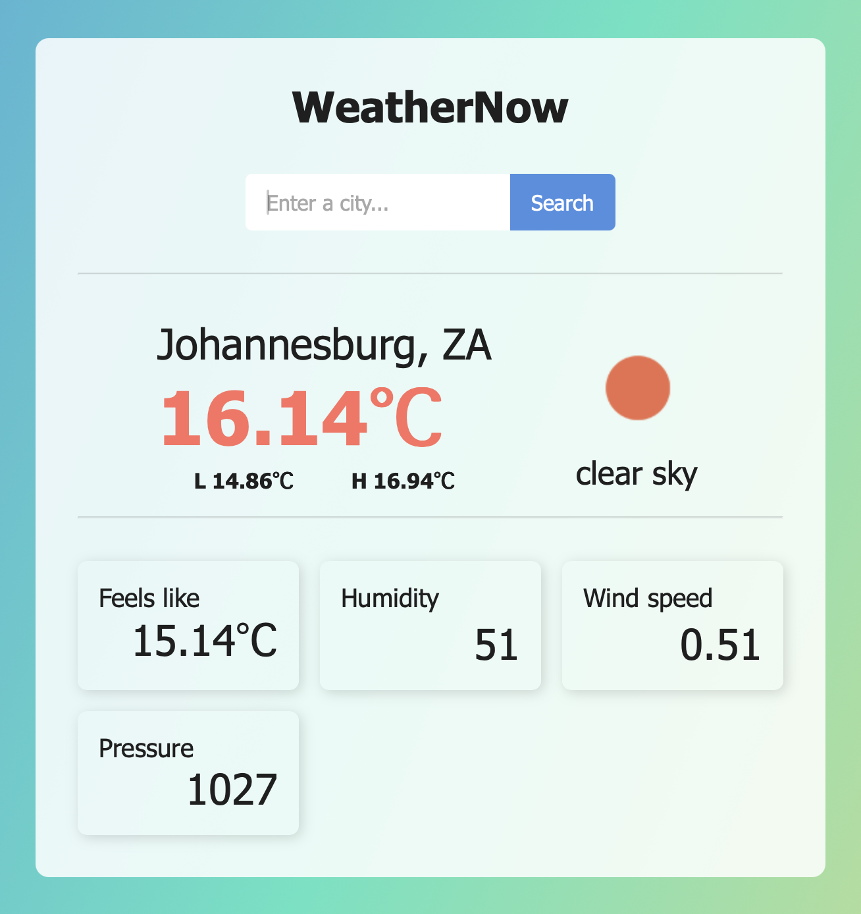
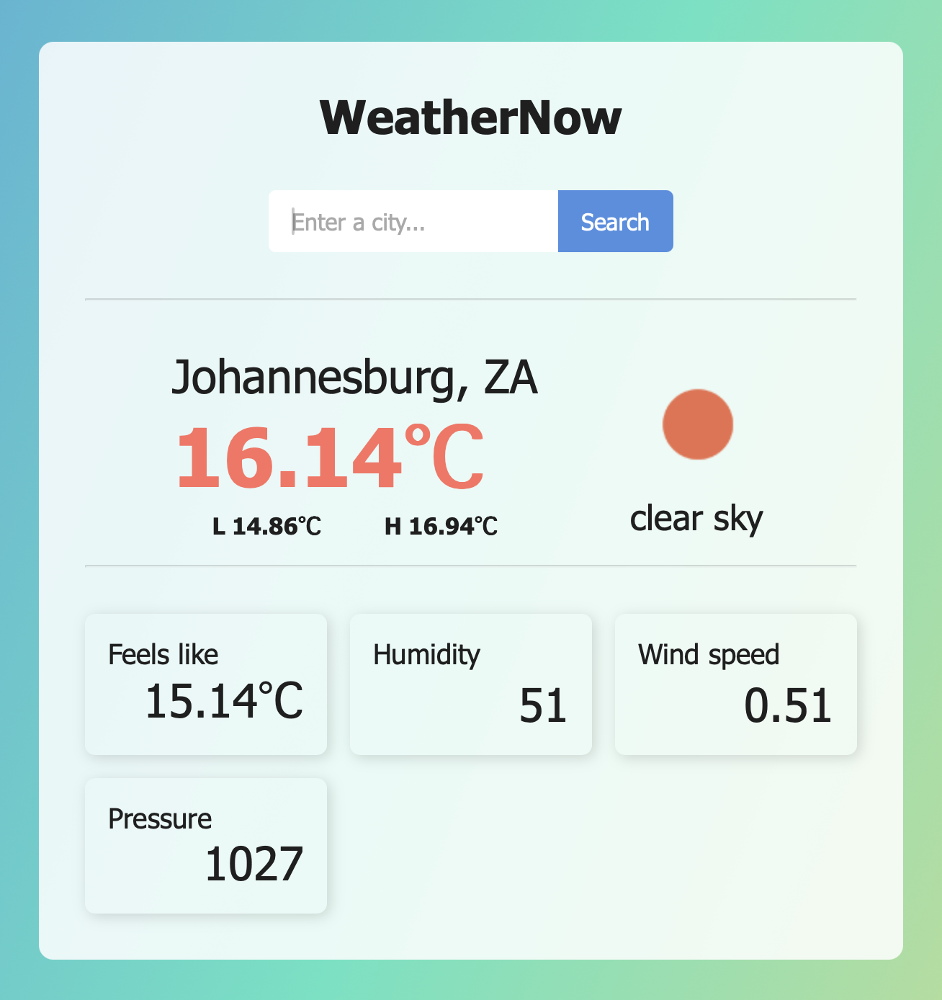

Utdanning
Bachelor i informatikk: språkteknologi (2024)
Fullførte en bachelorgrad i informatikk: språkteknologi ved UiO. Jeg
lærte programmeringsspråk som Python, Java og JavaScript, samt
sentrale konsepter innen algoritmer, databaser, utviklingsmetodikk,
maskinlæring og problemløsning.
Nøkkelferdigheter
- Python, Java
- SQL
- HTML, CSS, JavaScript (+React)
- Git + GitHub
Årsstudium i engelsk (2021) & Praktisk pedagogisk utdanning (2022)
Fullførte et årsstudium i engelsk og et årsstudium i pedagogikk
(PPU). PPU ga meg erfaring med undervisning og klasseledelse, samt
evnen til å formidle kunnskap på en tydelig måte.
Nøkkelferdigheter
- Pedagogikk
- Fagdidaktikk
- Kommunikasjon
- Praksis fra ungdoms- og videregående skole
Mastergrad i russisk (2020)
Fullførte en mastergrad i russisk med fokus på oversettelse mellom
russisk og norsk. Masteroppgaven kombinerte praktisk oversettelse og
teoretisk analyse.
Nøkkelferdigheter
- Prosjektarbeid
- Språk- og oversettelsesteori
- Dataorganisering
- Kvalitetssikring
Bachelorgrad i japansk (2016)
Fullførte en bachelorgrad i japansk. Studiet inkluderte emner innen
språk, litteratur, historie og kultur (samt to utvekslingsopphold i
Japan).
Nøkkelferdigheter
- Kulturforståelse
- Språkferdigheter
- Kommunikasjon
 
